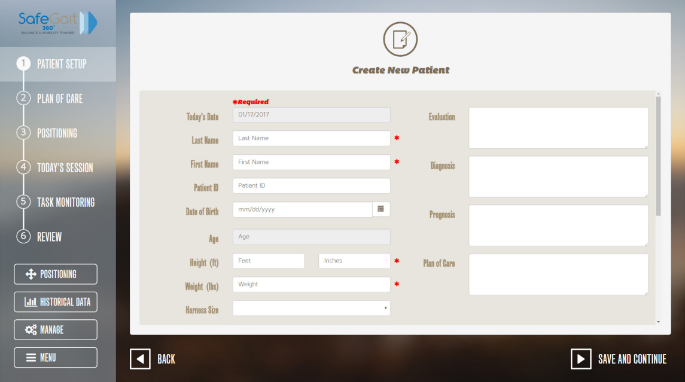

User Interface
Create new patient screen:
Workflow Menu:
A menu displays along the left side of the screen, presented in workflow order from Step 1: Patient Setup to Step 6:
Review.
An additional option includes HISTORICAL DATA, which may be accessed at different points in the system workflow
as necessary. If you are logged in as an administrative user, a MANAGE option allows you to manage users and change
system settings.
The Patient Management Software restricts you from accessing screens that violate the system workflow; for example,
you cannot access the plan of care until you have selected a patient.
1. MENU
The MENU option at the bottom left of the screen opens a menu that displays the current user’s name and the following
options:
About: Displays the current Patient Management Software version.
Change Password: Change your password.
Log Out: Log out of the system.
Shutdown: Shut down the kiosk.
2. Data Entry/Device Control Options
The main section of the screen provides options for data entry and device control.
3. Related Operations and Navigation Controls
Operations and navigation controls related to the main section of the screen display along the bottom of the screen.
The BACK button is available on most Patient Management Software screens and allows you to return to the previous
screen.
Kiosk vs. Handheld Remote
The kiosk and handheld remote control have similar user interfaces.
• The handheld remote control can perform a subset of the operations that can be performed on the kiosk.
• In general, the handheld remote control performs device control operations vs. data entry operations.
• The procedures are the same for both devices
• While one of the devices is in use, a TAKE CONTROL OF APPLICATION screen displays at the other device.
• To move control from one device to the other, touch TAKE CONTROL OF APPLICATION.